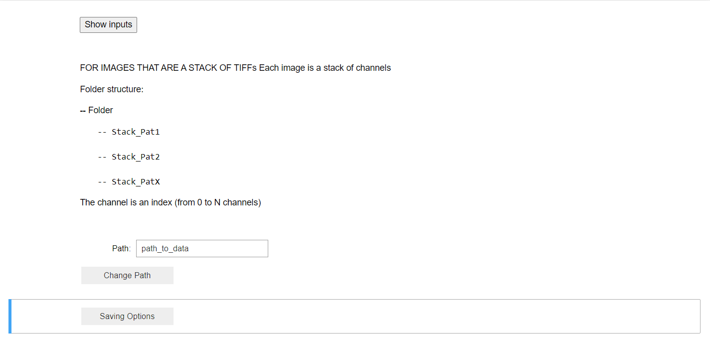
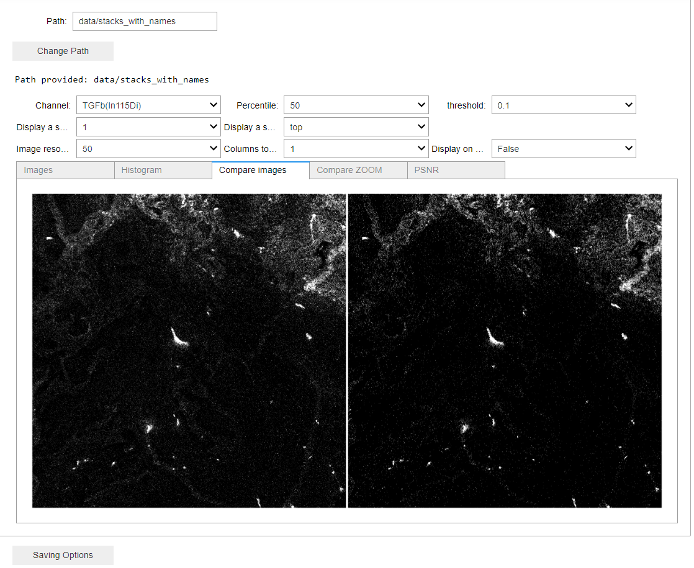
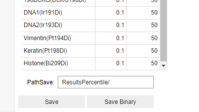

Notebook usage
There are 2 Notebooks available.
Use check_th_all_ch_per_image if each FOV is a stack of channels.
Use check_th_one_ch_per_image if each FOV is a directory with multiple tiffs inside (one per each channel)
Open the notebook and click Kernel -> Restart and Run all
For all channels in a stack it should look like this:
Change the path to the location of your data and click ‘Change Path’.
You can now change the channels to visualize and select different percentiles and thresholds.
Compare images tab gives you the comparison between raw and the clean image with the defined settings
Compare Zoom plots the images using Plotly library that allows for zooming some areas.
You can change the number of images that are displayed and specified a image name.
In the case of stacks of channels, your channel names should be in the page tags. Otherwise, the channel names will be set as index numbers.
In the case of directory with multiple files, the channel names should be in the file names.
Once you have the values for percentile and thresholds defined you can save your images by just clicking the save button.
In case of a file per channel, you can save all the images of the same channel at once.
In case of stacks with multiple channels per FOV, you need to define the values per each channel in the pop up table and click save (see below).
Saving images will mimick your structure and filenames (and pagetags) in the saving directory.